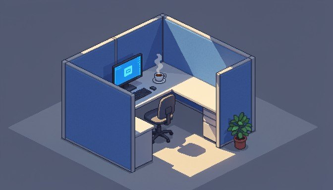
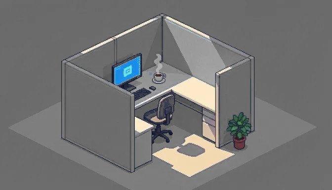
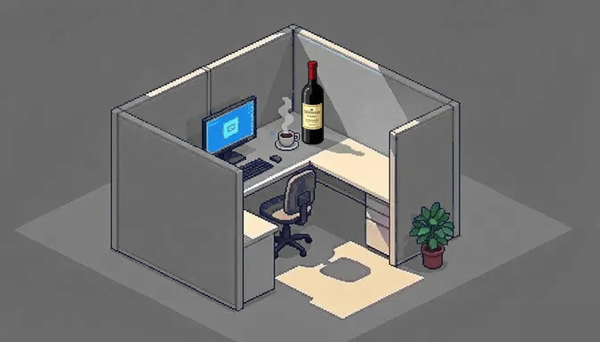
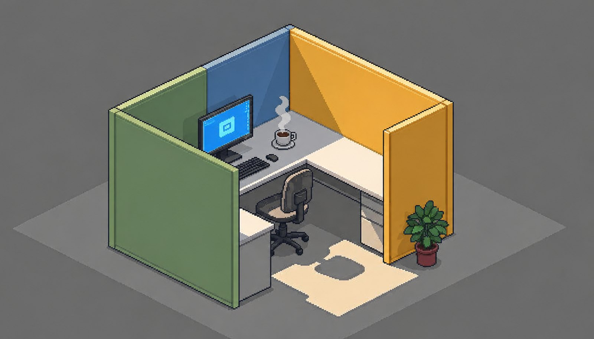
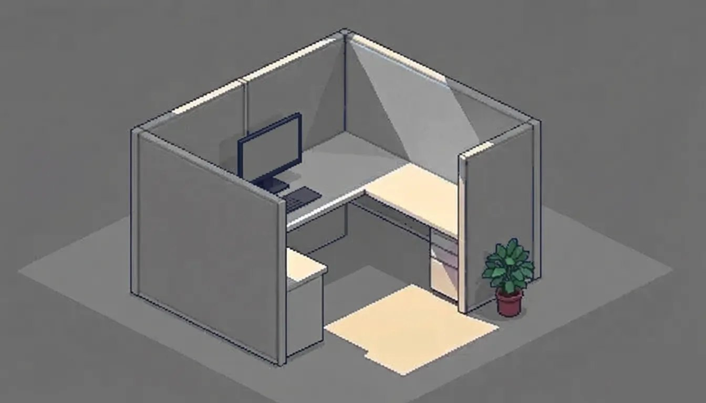

Di recente ero a una conferenza di settore dove ho incontrato un paio di conoscenti con cui avevo iniziato ai tempi degli studi di San Pietroburgo. A differenza di me, che ho sempre lavorato «per il padrone», a un certo punto loro scelsero la strada spinosa di fare indie e studi propri, e (a giudicare da come ordinavano da bere) quella strada si è rivelata parecchio più spinosa di come sembrava dieci anni fa. Anche se gli occhi gli brillavano esattamente come allora. Allora come adesso, quegli occhi che brillavano suscitavano insieme invidia e il vago sospetto che semplicemente non avessero ancora avuto il tempo di stancarsi davvero.
Poi ci siamo messi a parlare. Chiamiamolo Kostja — quello con cui una volta facevo cloni dei «Sims» — è ormai un anno che sforna una gacha per certi cinesi per pagare gli stipendi ai suoi ragazzi. E chiamiamolo Ljoša — gestisce uno studio di quattro persone e fa code review di commit scritti dall'IA, ma ora per dei tizi indiani, solo che quelli nella soleggiata California anziché nella bellissima Delhi. Qui mi torna in mente il mio quarto di secolo di legacy, e quando la gente mi dice che presto l'IA rimpiazzerà i programmatori, io gioisco in silenzio: dopo tanti anni di sviluppo, lì la maggior parte dei sistemi è costruita così storta che qualsiasi rete neurale brucia tutti i suoi token solo cercando di capire dove diavolo è finita. Il che significa che, almeno finché non finisce il supporto del gioco, avrò da fare.
Gli studi indie non amano molto dire ad alta voce che sfornano gacha e lavorano per i cinesi, perché rompe lo stereotipo dei «liberi e indipendenti», specie agli eventi di settore dove tutti girano con badge identici e facce ugualmente sicure di sé. Entrare nell'indie è relativamente facile; ma sopravviverci più a lungo del ciclo di sviluppo di un progetto medio si rivela un compito con l'asterisco.
Della carta da parati grigia
Storicamente, nello sviluppo di videogiochi si è consolidata una divisione del lavoro: in quelli che fanno ciò che vogliono; quelli che fanno ciò per cui li pagano; e quelli che fingono che l'una cosa sia in qualche modo collegata all'altra. Le prospettive di migrazione, una volta che sei già incastrato in una delle categorie, sono così così, e chi lavora nei Larian e nei Remedy di questo mondo raramente si chiede perché una persona con due lauree specialistiche stia impaginando per il terzo anno di fila l'animazione di raccolta delle monete.
La maggior parte dei progetti del cuore, quelli per cui una volta abbiamo aperto Unity o Unreal o abbiamo iniziato a scrivere un motore nostro, vivono di puro entusiasmo, di un sottile strato di soldi dell'editore e di preghiere — e la preghiera di solito funziona un po' meglio del resto. O gli stipendi non ci sono, oppure vengono pagati in stock option che hanno la possibilità di trasformarsi in soldi veri più o meno con la stessa probabilità con cui Bethesda finalmente sistemerà il suo motore.
I progetti-servizio con microtransazioni e presenza online costante vivono all'opposto, in modalità pioggia continua di contante, ma io guardo in quella direzione con crescente malinconia, perché dopo l'annuncio dell'ennesimo pass stagionale da cinquemila rubli nell'ennesimo open world grindoso comincio a dubitare seriamente che stiamo ancora facendo videogiochi, e non casinò con una grafica gradevole.
I grandi progetti single-player stanno da qualche parte nel mezzo. A volte vengono fuori davvero decenti, a volte ottieni un prodotto, o l'ennesimo remake di un remake di una riedizione. Nell'anno duemilaventisei non capisco nemmeno più di cosa stupirmi, quando l'industria annuncia solennemente il remaster di un gioco del 2021 la cui principale novità era un remaster di un gioco del 2014.
Un recente trailer dell'ennesimo open world con un protagonista barbuto e silenzioso che raccoglie risorse di crafting e si arrampica su una torre per svelare un pezzo di mappa mi ha ricordato che questa formula è ormai al suo sedicesimo anno dello stesso giorno della marmotta del game design, solo che le texture continuano a diventare a risoluzione sempre più alta.
Preciso che guardo l'industria dalla mia poltrona, e quella poltrona sta in una grande azienda. Nella nicchia degli sviluppatori indipendenti su Steam Deck e Game Pass il quadro è di sicuro migliore, e lì la gente ha ottenuto nuove piattaforme e nuova aria. Ma io parlo di ciò che vedo io.

Della scelta
La maggior parte di chi è entrato nel mestiere sull'onda dell'amore per certi System Shock, Baldur's Gate e Silent Hill scopre un paio d'anni dopo, con sua sorpresa, che l'amore per questi giochi non si converte molto volentieri in stipendio, mentre gli investitori che versano generosamente denaro nell'ennesimo clone di un Coraggioso Vecchietto si spaventano alle parole «immersive sim», iniziano a nascondere il libretto degli assegni e cercano di svignarsela verso un posto più redditizio.
Alla fine, gli studi con idee davvero interessanti resistono esattamente finché ai loro fondatori bastano la pazienza, i soldi del prestito, gli appartamenti e la solidità del rapporto con il coniuge. Non appena una di queste risorse si esaurisce, otteniamo l'ennesimo post sui social con la foto di un ufficio vuoto e una lettera sentita di ringraziamento al team.
Guardo questi post, poi guardo la data di pubblicazione e stimo mentalmente chi dei miei conoscenti stia aggiornando il curriculum proprio adesso e chi si possa trascinare per un bugfix nella mia accogliente palude di legacy — il che parla o del mio spirito di osservazione, o della portata del problema, o del fatto che ho troppi conoscenti provenienti da studi chiusi.
Dopo la chiusura dell'ennesimo studio amato, i suoi ex dipendenti scoprono che di offerte di lavoro sul mercato, in realtà, ce ne sono parecchie. Solo che tutte queste offerte in qualche modo conducono a poche aziende che fanno giochi identici con icone diverse. E lì, tra l'altro, pagano piuttosto bene, il che complica notevolmente la scelta morale interiore.
L'ironia particolarmente raffinata è che il classico segmento mobile, dopo quasi vent'anni di follia, ora sopravvive con alterne fortune, e tutti questi grandi player hanno cominciato in sordina a diversificarsi in generi adiacenti dal grado variabile di «responsabilità sociale», e ormai praticamente ogni grande editore ha, da qualche parte al terzo livello di filiali, uno studio educatamente chiamato «adult division» o semplicemente «filiale», e al bar — beh, in modo un po' meno educato, a partire dalla lettera «p»…
E così un paio di miei ex colleghi di una linea mobile relativamente rispettabile sul costruire una città o allevare pesci mi scrivono che passano a un nuovo progetto nella «filiale» dell'azienda… Faccio fatica a giudicarli — a una persona serve semplicemente riuscire a pagare l'affitto dell'appartamento, la manicure della moglie e un laptop nuovo per il proprio amato sé.
E così finiamo tutti collettivamente in una grande stanza con la carta da parati grigia, dove qualcuno fa un capolavoro campando di noodle istantanei, qualcuno sforna meccaniche di monetizzazione e odia in silenzio le proprie mattine, e qualcuno riesce a combinare entrambe le occupazioni, di regola non troppo bene, e nel frattempo tutti fingiamo sinceramente che vada tutto benissimo.

Dei sogni
A quelle stesse conferenze, dopo il secondo bicchiere, le conversazioni virano inevitabilmente verso il «finisco questo contratto e poi mi metto sul mio progetto», e tutti annuiamo d'accordo, perché noi stessi abbiamo sui nostri dischi proprio quel file con la descrizione del gioco dei sogni, che non si apre dal '18, ma la cui data di modifica è chissà come sempre fresca, perché ci strisciamo dentro regolarmente per aggiungere un'altra riga e lo chiudiamo senza aver scritto nulla.
Dopo il terzo bicchiere di vino e uno shot di qualcosa, Ljoša finalmente dice ad alta voce la cosa per cui, a quanto pare, era venuto a questa conferenza: che sono ormai sei anni che si ritrova con la pesante sensazione di ottimizzare professionalmente la vendita di skin in un progetto che lui stesso non installerebbe nemmeno sotto minaccia di perdere tutti gli arti.
E a casa, nei weekend, di notte, smanetta sul suo progettino sull'esplorazione di stazioni della metro abbandonate, in cui non ci sono lootbox, né bonus giornalieri, né battle pass, né modalità cooperativa con compagni di squadra dal Brasile — ma, purtroppo, non c'è nemmeno un investitore che possa reggere un anno di sviluppo a tempo pieno.
Questa è stata probabilmente una delle conversazioni più dissalanti degli ultimi due anni, perché ho sentito che quell'uomo aveva smesso di considerarsi uno sviluppatore di videogiochi e ora scrive solo codice per lo stipendio, perché per gli occhi che brillavano pagavano sempre meno, così a un certo punto gli occhi hanno smesso di brillare, e lo stipendio è rimasto. E per finanziare in qualche modo il proprio progetto del cuore, prende lavori a contratto per conto terzi per clienti non proprio dei più ispiranti, e non starò nemmeno a specificare quali di preciso. E ogni volta si promette che questo ingaggio sarà l'ultimo, e ogni volta, con sua sorpresa, firma il successivo, perché il progetto del cuore si rifiuta ostinatamente di autosostenersi, e i grandi eroi indie dei documentari hanno tutti mentito un pochino.
Kostja in quel momento stava finendo il suo terzo bicchiere, e per un paio di minuti ci siamo tutti dimenticati che ha una gacha, i suoi ragazzi e un contratto d'affitto per l'ufficio. Anzi no — Kostja di sicuro non se n'era dimenticato; proprio in quel momento stava rispondendo a proposito di una nuova feature.

Del team
Globalmente questo, ovviamente, non è diverso dalla situazione in cui io stesso mi sono ritrovato qualche anno fa in un grande studio con la carta da parati grigia, solo che ora scelgo io stesso con cosa esattamente avvelenare la mia coscienza professionale — il che in teoria dovrebbe aggiungere dignità, ma chissà perché aggiunge solo rughe.
In questo tempo ho messo insieme una squadra di qualche ragazzo in gamba che al colloquio ha detto onestamente di essere venuto soprattutto per uno stipendio stabile e per la promessa che avremmo passato almeno metà del tempo di lavoro su qualcosa di significativo. E li capisco sinceramente, perché io stesso mi sarei assunto esattamente a quelle condizioni.
Questa è probabilmente la cosa principale che ho capito nel corso della mia carriera nell'industria, e suona un po' triste, ma è onesta: la professione di sviluppatore gamedev nell'anno duemilaventisei è in larga misura l'arte di negoziare con sé stessi che proprio queste quaranta ore a settimana le sopporteremo per il bene di quelle dieci in cui facciamo qualcosa che non ci vergogneremo di mostrare a nostro figlio.
E sai, a un certo punto ho smesso di rimproverarmelo, perché quando mi guardo intorno non vedo una sola persona nel nostro segmento che abbia questo equilibrio sistemato alla perfezione. Questo vale anche per quegli stessi eroi dei podcast e delle interviste che parlano di arte pura e di seguire il sogno, ma un investitore su due dei quali viene da un fondo con una storia finanziaria non proprio etica.
Siamo tutti sulla stessa barca, di vario grado di falla, e l'unica differenza significativa tra noi è chi, e con quale esatta intonazione, se ne lamenta su Twitter o nei post su Habr — e io preferisco sinceramente la compagnia di chi almeno ammette onestamente che la barca, in effetti, fa acqua, e non finge che stiamo tutti navigando su una nave da crociera verso le isole intitolate a Sid Meier.

Se il gamedev fosse davvero l'industria romantica che dipingono sui manifesti delle conferenze, avremmo smesso da tempo di ricevere remaster di giochi di nove anni fa spacciati per le novità dell'anno.
P.S. La barca e la miseria le abbiamo trattate; restano i cani. La maggior parte dei randagi ringhia gli uni agli altri per lo stesso pezzo che è stato generosamente lanciato in mezzo a loro per godersi la zuffa. I più furbi alla fine capiscono che il vano scale è caldo e che ogni tanto lì ti danno da mangiare.
← Tutti gli articoli